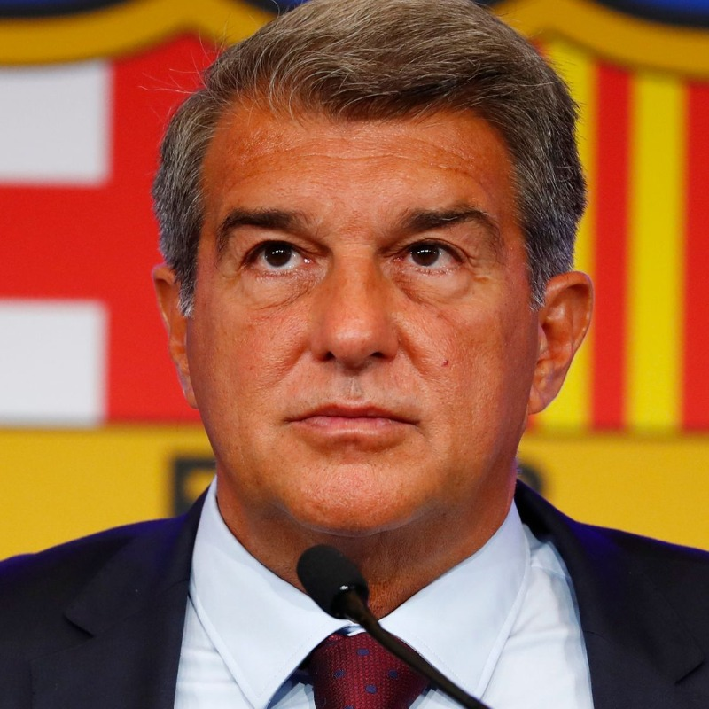

Main page
Players
Stadium
Coach
President

Joan Laporta
, 59
Barcelona, Spain
FC Barcelona president
Biography
"Joan Laporta i Estruch (born 29 June 1962) is a Spanish politician and current president of FC Barcelona. Laporta is a lawyer (he graduated from the University of Barcelona) with his own firm, Laporta & Arbós, which has a number of notable Spanish firms as clients. He served as MP in the Parliament of Catalonia between 2010 and 2012. During his first tenure as president of FC Barcelona, they set a new record for trophies won in a 12-month period, winning 6 in 2009. After departing in 2010, he was re-elected as club president in 2021. Laporta started his involvement with FC Barcelona leading the "Elefant Blau" ("Blue Elephant"), a group which opposed former president Josep Lluís Núñez and which, in 1998, tried unsuccessfully a vote of no confidence against him.2003–2010: First tenure as club presidentFirst season in chargeIn the 2003 elections, Laporta did not start as the favourite, but his charisma grew during the electoral campaign and he finally won against the expected victor, publicist Lluís Bassat, in part because of a widely published (and ultimately unfulfilled) promise to bring David Beckham to Barcelona. Laporta's first season (2003–04) as president would prove to be a watershed for the club, but not without initial instability. Laporta also had to spur his board to foster creative business ideas to raise revenue, and in recent years, that new style of management eventually succeeded in turning around the fortunes of the club with the team spectacularly returning to form and finishing second after being at the bottom of the table in 2003–04, and then finally managing to win La Liga titles both in 2004–05 and in 2005–06. The club finally won the UEFA Champions League on 17 May 2006, only their second time in history, as well as that year's Liga championship. Barcelona had a long history of avoiding shirt sponsors. After Laporta left as president, the club signed shirt sponsorships with Qatar Foundation and later Qatar Airways, which he criticised. Re-election as club presidentThere was some discussion about when exactly Laporta's mandate started, with the board of directors holding one opinion and the opposition another."